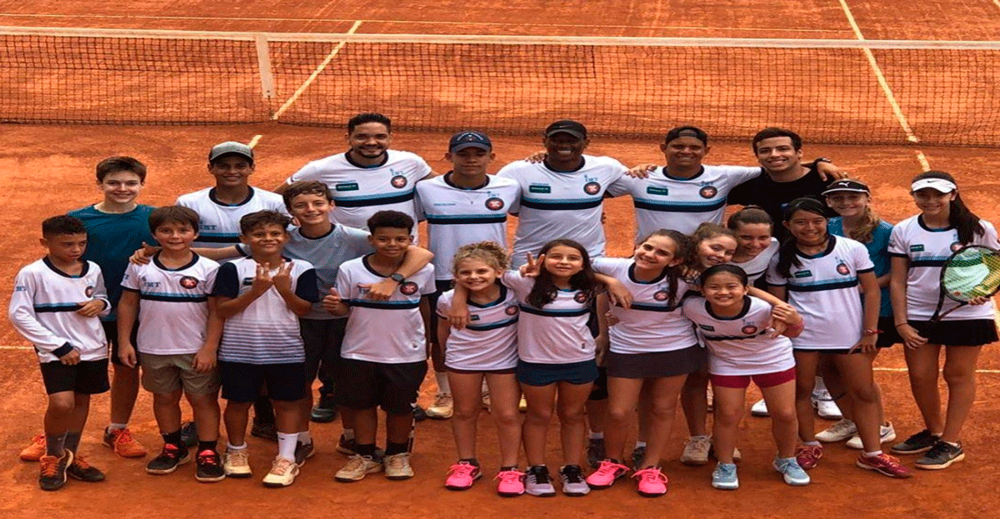
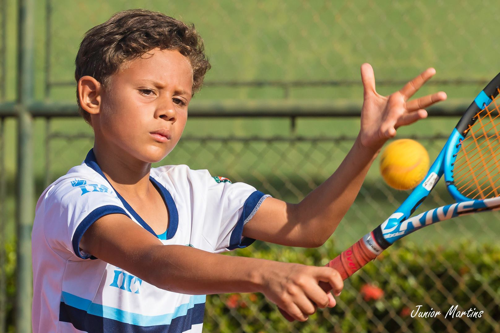
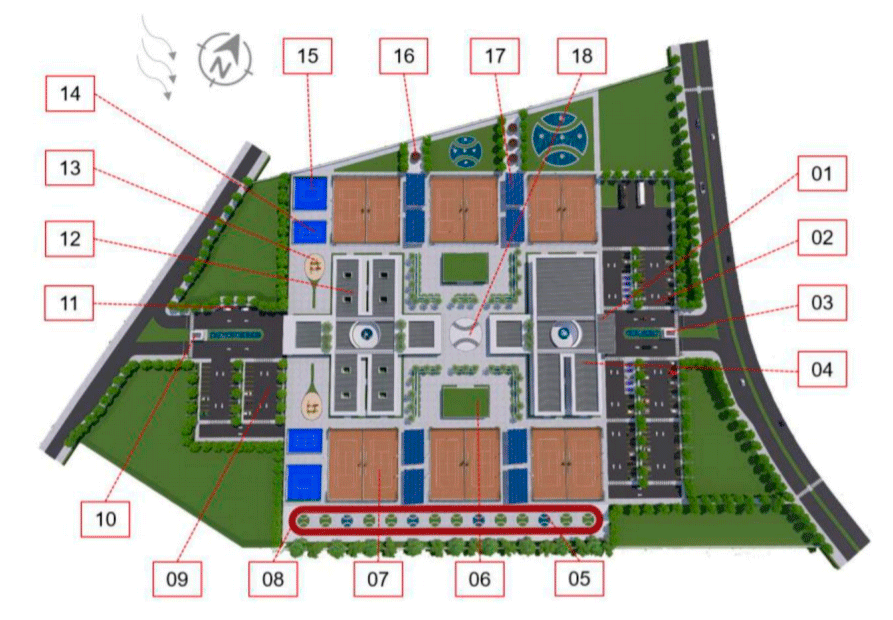

Tênis Social

O projeto Tênis Social oferece atividades de esporte educacional no contraturno escolar para 320 crianças, de seis a onze anos. Visa oportunizar a prática do tênis para todas as camadas sociais com o intuito de gerar inclusão social e igualdade de gênero e melhorar a saúde, a qualidade de vida, o convívio social, a autoestima e o rendimento escolar. E é um projeto aprovado pela Lei de Incentivo ao Esporte e apto à captação de recursos.
O projeto social fará uso de uma metodologia criada pela International Tennis Federation – ITF em 2007, chamado de “Play and Stay”, com tradução “Jogue e Fique”, que visa fazer com que o aluno iniciante progrida mais rápido no tênis, ao praticar com raquetes mais leves, bolas mais lentas, quadras menores e redes mais baixas. É uma metodologia que se vale do uso de equipamentos pedagógicos desenvolvidos especificamente para a iniciação no tênis. E tudo com abordagem dinâmica para gerar um ambiente lúdico.
O projeto contará com Coordenador Técnico presente no local de execução para auxiliar na implementação da metodologia e para supervisionar o trabalho realizado. Ainda terá quatro professores de tênis, que serão responsáveis por planejar, orientar e executar as aulas, e oito estagiários, que serão responsáveis por auxiliar professores e fazer controle de participação, preenchimento de planilhas, passar treino funcional e outros.
O Tênis Social pode arrecadar R$ 1.030.504,02 e todas as atividades serão feitas em local cedido pela Prefeitura Municipal de Cuiabá, no Centro Esportivo João Balduíno Curvo, popularmente conhecido como Ginásio do Quilombo, que está localizado no bairro do Quilombo, na região Oeste de Cuiabá-MT.
Top 10

O Top 10 visa dar condições de treinamento de alto nível para 30 atletas, de sete a 16 anos. Um treino com estrutura física e técnica adequada e multidisciplinar, como, por exemplo, com treinador, assistente técnico, fisioterapeuta, nutricionista, psicólogo e preparador físico. Bem como com os equipamentos esportivos necessários e ainda custear despesas de participação em torneios nacionais. E está aprovado pela Lei de Incentivo ao Esporte e apto à captação.
Os atletas precisam passar por um processo seletivo para poderem participar do projeto Top 10. Eles são convidados para testes no IMT e têm suas habilidades técnicas e multidisciplinares (preparo físico, nutricional, fisioterápico, psicológico e educacional) avaliadas. Dessa forma, caso aprovados, passam a fazer parte dos treinamentos realizados pelo IMT. E, vale dizer que, conforme estipulado pela legislação, o presente projeto não atenderá nenhum atleta profissional.
Uma das partes de grande importância para o projeto também será a participação dos atletas em competições. Tendo, como base, uma previsão de calendário que considera diversas das principais competições juvenis nacionais e internacionais, que acorrem no Brasil e nos continentes Americano e Europeu. E tais torneios são escolhidos pela comissão técnica conforme o planejamento de carreira de cada atleta.
Este projeto está apto para captar recursos no montante de R$ 1.558.025,23 e as atividades de treinamento serão realizadas na Academia Tennis Company, onde o IMT já atua e que está situado na Rua Rui Barbosa, n°515, no bairro Goiabeiras, em Cuiabá-MT.
CT Tênis

O IMT possui projeto arquitetônico para a construção de um Centro de Treinamento de Tênis de Alto Rendimento com mais de sete mil metros quadrados de área construída, com doze quadras de tênis, quadra para crianças e paredão, pista de corrida, sistema de energia fotovoltaica, telhado verde e sistema de captação de água da chuva, entre outros, desenvolvido pela arquiteta e tenista, Rita de Cássia Lirio.
Um projeto arquitetônico que propõe uma infraestrutura desportiva e recreativa com acessibilidade e sustentabilidade, com capacidade para aproveitar a luz natural, a ventilação natural e se integrar com a natureza. E formado por seis setores: setor de treinamento, setor de espaço funcional, setor administrativo, setor de convivência, setor de serviço e setor de alojamento.
O CT de Tênis contaria com sistema de energia fotovoltaica. Essa é a fonte de energia limpa e renovável que mais cresce no mundo e que gera energia elétrica a partir da conversão da luz solar. Uma estrutura construída com painéis solares, sistema de fixação de placas solares, inversor solar, cabeamentos, conectores e outros materiais elétricos. E as placas solares seriam colocadas na cobertura das arquibancadas.
Também teria os telhados verdes, que são exemplos de ações sustentáveis para o bem-estar e a longevidade da sociedade. Projetos de arquitetura verde aproveitam a cobertura de imóveis, telhados e lajes à plantação de vegetação. O que resulta em diversos pontos positivos, como, por exemplo: ajuda na drenagem da água da chuva, o que diminui a necessidade de sistemas de escoamento, e ajuda como isolante térmico e acústico, o que diminui os ruídos externos e a temperatura ambiente.
Além disso, o CT de Tênis teria sistema de captação de água da chuva com finalidades não potáveis, isto é, para aproveitar a água da chuva em sanitários, na irrigação e nos demais usos. A captação acontece a partir das águas pluviais que caem na cobertura, que, por sua vez, direcionam a água através das calhas e dos condutores, passando pelo filtro removedor de resíduos e até o reservatório para armazenamento.
Mato Grosso não possui uma estrutura desse nível técnico e tecnológico e esse projeto visa suprir essa necessidade da comunidade de tenistas do estado.